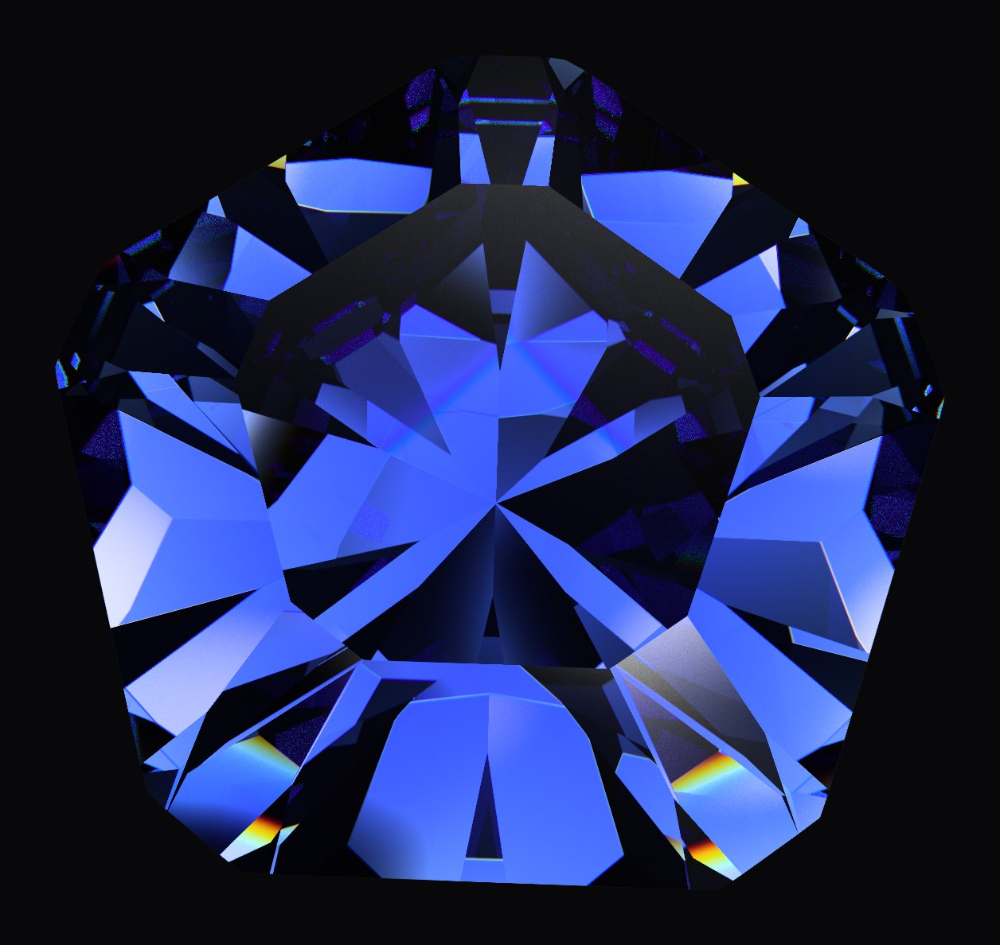
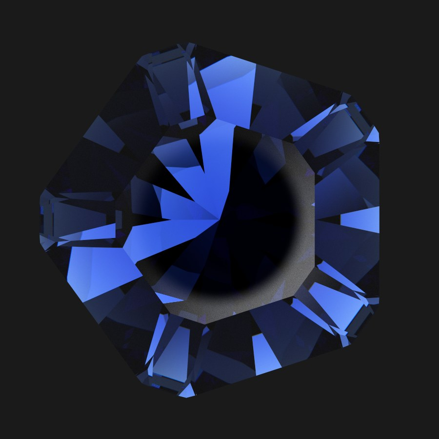
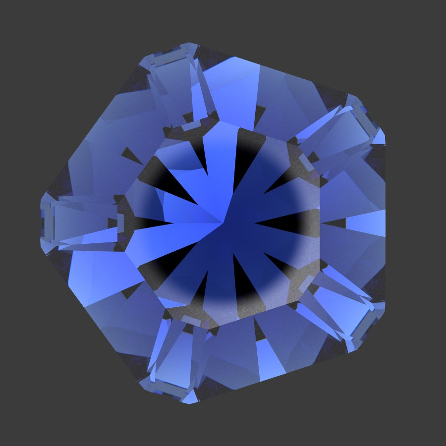
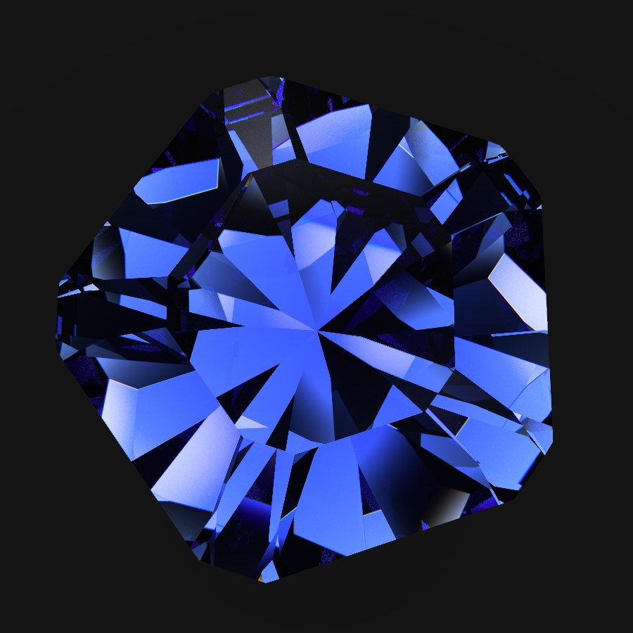

Pentalume Sapphire
A 51-facet clipped pentagon for sapphire, designed by Niklas Gussek.
Download .psdd GemCAD .asc Gem Cut Studio .gcs Cutting instructions (PDF)
1The design
Five broad blue sectors, protected corners and paired shoulder facets. Cut in sapphire with the c-axis normal to the table.
- Designer
- Niklas Gussek
- Shape
- Clipped pentagon, L/W 1.051
- Facets
- 51 in 9 tiers: 20 pavilion, 10 girdle, 20 crown and the table
- Symmetry
- 5-fold, mirror
- Index gear
- 80
- Material
- Sapphire, RI 1.768
- Crystal axis
- Through the table
- Size
- 10.00 × 10.51 × 6.22 mm (width × length × depth)
- Weight
- 4.31 ct in sapphire at this size (10.00 mm wide). It scales with the cube of the width: 2.20 ct at 8 mm, 0.93 ct at 6 mm.


2Renders
The stone in the built-in Sapphire material, rendered by Pleochroma’s spectral path tracer at 2048 samples per pixel: from above and from the side at one scale, then face-up under two more of the app’s lighting setups and tilted by 10°. In the Light Tent and under Shop Lights the dark center is the camera and the observer, mirrored in the table.







3Tilt video
The stone rocking about two of the tilt chart’s axes in turn, 0° and 90°, from Pleochroma’s tilt video export.
4Facet angles
Angles and index positions on an 80-tooth index gear, in cutting order, written as the standard cutting-instructions sheet writes them. Every facet’s exact depth is in the design files; the cutting instructions (PDF) add the meet for every tier.


| Tier | Angle | Index | Description |
|---|---|---|---|
| Pavilion | |||
| P1 | 43.00° | 80-16-32-48-64 | Five broad mains |
| P2 | 40.50° | 08-24-40-56-72 | Five corner guards |
| P3 | 44.00° | 76-04-12-20-28-36-44-52-60-68 | Ten shoulder splits |
| Girdle | |||
| G1 | 90.00° | 80-16-32-48-64 | Five long sides |
| G2 | 90.00° | 08-24-40-56-72 | Five clipping flats |
| Crown | |||
| C1 | 34.00° | 80-16-32-48-64 | Five broad bezels |
| C2 | 30.00° | 08-24-40-56-72 | Five corner bezels |
| C3 | 33.00° | 76-04-12-20-28-36-44-52-60-68 | Ten shoulder facets |
| Table | 0.00° | – | The table |
5Proportions and light
- Table
- 53.6 % of the width
- Crown height
- 14.4 % (C/W 0.144)
- Pavilion depth
- 43.8 % (P/W 0.438, P/C 3.033)
- Girdle
- 4.0 %
- Total depth
- 62.2 % (H/W 0.622)
- Volume
- V/W³ 0.215
Light figures in sapphire under the ISO hemisphere lighting, table up and averaged over the tilt sweep, as Pleochroma computes them. They are fractions of light paths, not a measured light return.
| Brilliance | Windowing | Extinction | Fire index | Scintillation | |
|---|---|---|---|---|---|
| Table up | 84.8 % | 2.3 % | 12.9 % | 28.9 | 24.1 % |
| Tilted | 47.8 % | 39.2 % | 13.0 % | – | – |
6Downloads
| File | Format | Opens in | Size |
|---|---|---|---|
| Pentalume_Sapphire.psdd | Pleochroma design | Pleochroma Cut, the web app and the mobile app. Keeps the material (Sapphire), the size (10 mm) and the crystal axis. | 2.9 KBSHA-256 78ec1fd2d209c4d228ae62371dd05df6ec9c10deafb9588effb72dec45a38899 |
| Pentalume_Sapphire.asc | GemCAD 5.0 | GemCAD and the faceting programs that read its files. Geometry and angles only: choose Sapphire, 10 mm and the c-axis through the table yourself. | 0.6 KBSHA-256 7e0bb1330e2c2de0bd66c7db7d102caf013393ba9e4a9dbb9d99cfbab99c9f29 |
| Pentalume_Sapphire.gcs | Gem Cut Studio 1.1 | Gem Cut Studio. Geometry, angles and the refractive index of sapphire. | 34.1 KBSHA-256 890f25be7afb437c4afa65c2031ea27b37e892da570fd387b03e8276efbcad6e |
| Pentalume_Sapphire.pdf | Cutting instructions (PDF) | Any PDF viewer; prints on US Letter. The standard cutting-instructions sheet with the four views, angles, indices and the meet for every tier. | 27.5 KBSHA-256 c9d6145028b2d16791f7a59e2cfe1d668b12985c8ee3c79d4587c88b5f0eb4fb |
The three design files hold the same geometry; the PDF is the cutting-instructions sheet
for printing. A .psdd file opens in
Pleochroma Cut and in the web app, with the
renders, the cutting instructions and the cutting mode.